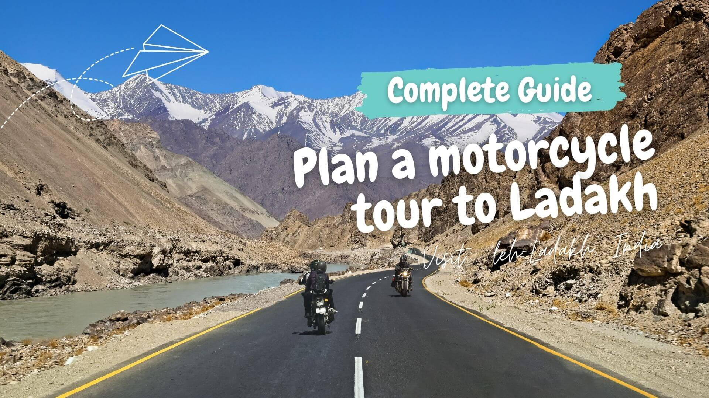
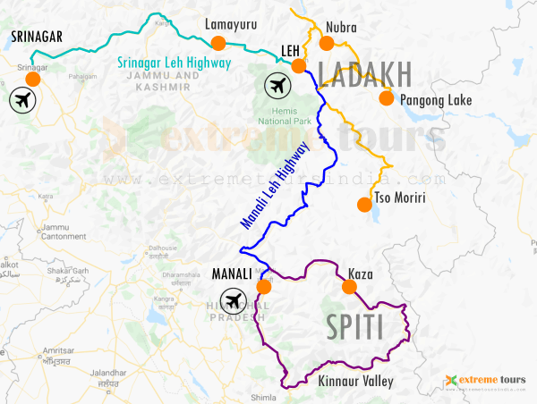
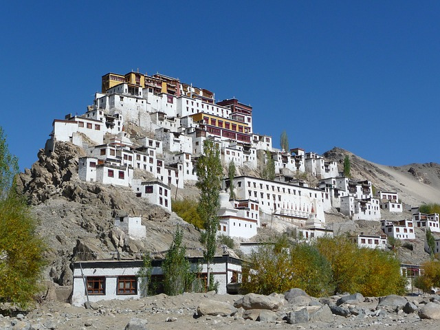
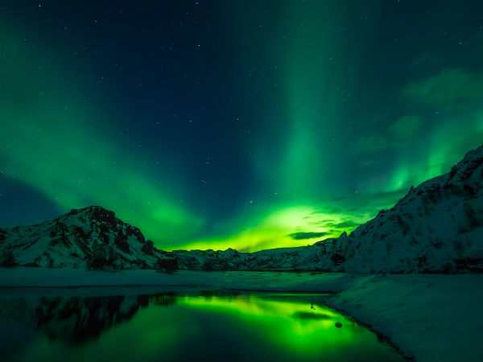
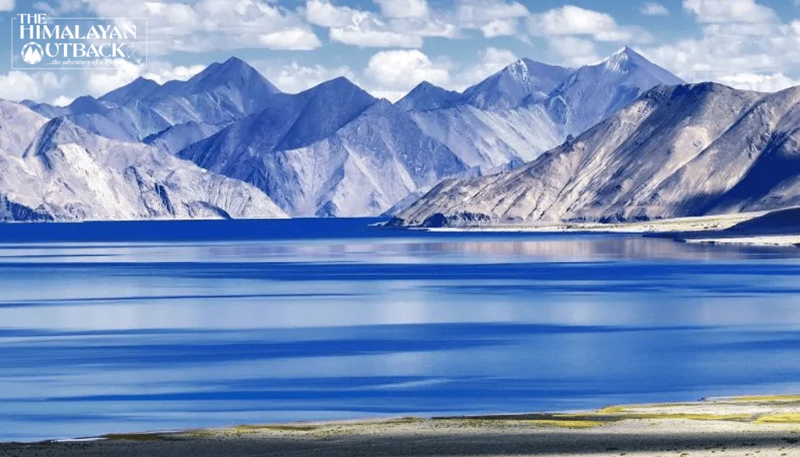
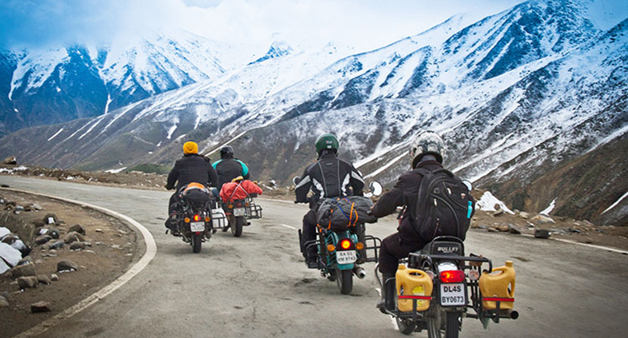
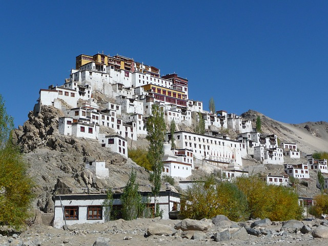
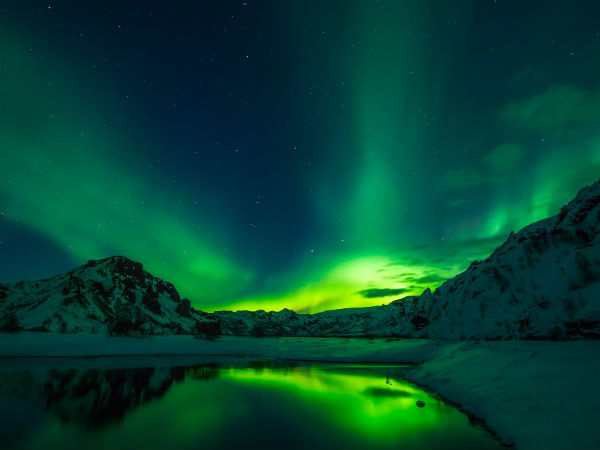
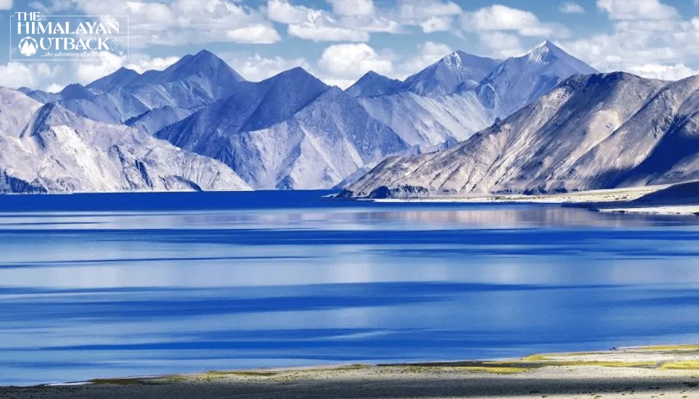
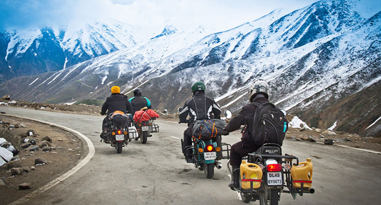

A Complete guide from motor cycle to Ladakh
There are about 1,800 km (1,100 mi) of roads in Ladakh of which 800 km (500 mi) are surfaced. The majority of roads in Ladakh are looked after by the Border Roads Organisation. There are two main roads that connect Ladakh with the rest of the country, NH1 connecting Srinagar to Kargil and Leh, and NH3 connecting Manali to Leh. A third road to Ladakh is the Nimmu–Padam–Darcha road, which is under construction.[

How to plan a motorcycle tour to Ladakh
Before we start, it is necessary to know that ‘Ladakh is an adventure destination and not an ordinary holiday destination‘
1. Routes to reach Ladakh
>For all international riders the base location is New Delhi as the nearest international airport is the IGI Airport in New Delhi. Ideal base location to start / end riding motorcycle are Manali , Srinagar & Leh. All these location are connected by air and road with New Delhi. There are mainly two road routes which connects Ladakh to the rest of the world.
(i) Srinagar – Leh Highway
Srinagar is the capital city of Jammu and Kashmir. The distance between New Delhi and Srinagar is approximately 800 km by road. Reach Srinagar by road or by air. A rider can start the journey from Srinagar and reach Leh in 2 days. Leh is 418 kilometers away from Srinagar.
Attractions on this route are Zojila Pass, Fotula Pass, Kargil, Lamayuru, and Alchi Monastery.
After reaching Leh, visit other popular attractions in and around Ladakh. And then either fly to New Delhi directly from Leh or go to Manali to complete the circuit.
(ii) Manali – Leh Highway
Going through this route is an amazing experience. It offers more challenging 4 high mountain passes, 2 lakes and scenic landscapes changing every few miles. Journey starts from Manali, a popular hill station nestled in the heart of Himachal Pradesh, India, accessible by road or air. The stretch from Manali to Leh is a 480-kilometer spectacle filled with awe-inspiring vistas. This route is full of adventure and it is a dream for adventure seeker to ride on this route. After reaching Leh you have the option to explore other places in Ladakh and then fly back to Delhi from Leh or come back to Manali.
2. Itineraries for Ladakh Motorcycle Tour
an itineraCreatingry for Ladakh require a little home work. There are lots of places to visit, so we must have to add the places as per the interest. There are some other factors like accommodation availability, Altitude gain, and route status. Also Consider factors like how much time you have, your capability to ride in a day etc. Ensure that you ride at a slower pace to avoid AMS symptoms.

Tips for Ladakh Trip
- These tips are helpful to prepare for a trip to Ladakh or Himalayas.
- Never underestimate Ladakh’s weather and Mountain sickness.
- Carry proper clothing, gears and well prepare for worst weather.
- See the packing checklist for Ladakh.
- Phone connectivity is only available at selected places.
- And don’t expect good internet connectivity .
- Carry medicines and supplies with you.
- Always expect that you may strand for a day.
- Don’t disturb any wild animal in the valley.
When to visit Ladakh?

Best Places to see in Leh Ladakh
 






